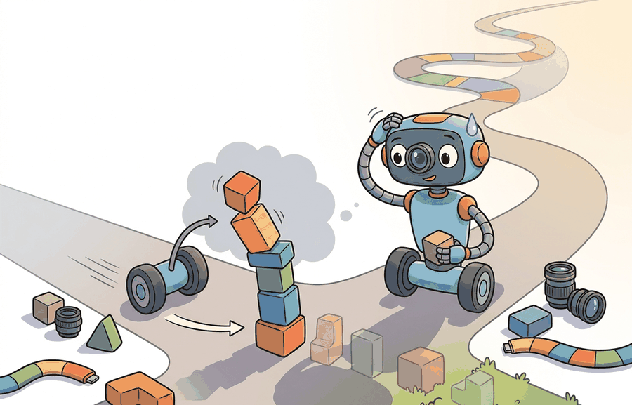

Section 1.5: The "Physical AI" framing and why 2023-2026 changed the field
"Physical AI is a transfer claim. The body decides how much of the claim survives."

Figure 1.5A: Section 1.5: The "Physical AI" framing and why 2023-2026 changed the field is easier to reason about when the figure shows the concept, evidence path, and action consequence in one physical situation.
Section 1.5
Big Picture
Physical AI is the framing that treats robot control the way the rest of the field treats language and vision: as a problem to be attacked with large pretrained models, pooled data, and shared infrastructure rather than one bespoke policy per robot. The substantive claim, stripped of marketing, is narrow and testable. It says that a single model class, the vision-language-action (VLA) model, can absorb semantic priors from internet-scale pretraining and demonstration data from many robots, then emit motor commands that survive contact with a physical body. The years 2023 to 2026 matter not because any slogan was coined but because five independent enablers matured at once and began to compound, turning "a policy for this robot" into "a foundation model adapted to this robot."
Figure 1.5. The Physical AI pipeline: internet-scale and cross-robot pretraining feed a single VLA policy whose action outputs are tested against a specific body. The enablers below are the reasons each arrow became cheaper to draw between 2023 and 2026.
What "Physical AI" actually asserts
Strip the term to its load-bearing content and it is a transfer hypothesis. Internet-scale vision-language pretraining produces representations of objects, relations, and instructions that are useful for control; pooled robot data supplies the motor grounding that text and images cannot; and a single network can carry both into a closed loop on a real body. The phrase earns its keep only where it changes what a builder can train, share, adapt, and evaluate. It is not a synonym for placing a large model on a robot, and it does not erase body-specific constraints: a token that means "close gripper" carries different timing, force, latency, and failure modes from one robot to the next.
A compact abstraction makes the transfer claim precise. Write the policy as a shared backbone plus an embodiment-conditioned action interface,
where $\phi_\theta$ encodes observation $o_t$ and language context $l_t$ into a representation, $g_\theta$ maps that representation to commands, and $e$ is an embodiment descriptor (gripper, joints, camera frame, control rate, safety limits). The Physical AI bet is that $\phi_\theta$ transfers broadly across bodies while $g_\theta$ and $e$ absorb the body-specific differences. Everything below is about why both halves of that bet became cheaper to make in this window.
Action is the test
The pretrained prior is only a hypothesis until it survives contact. Two policies with identical offline action accuracy can diverge completely in the loop because one was never trained on the states its own errors produce (Section 1.1). Physical AI is the claim that perception, language, action, and embodiment share enough structure to transfer; the closed-loop rollout is what adjudicates it.
The five causal factors behind the 2023-2026 shift
The shift was not one breakthrough. It was five enablers, each with a concrete technical cause, maturing close enough together to compound. The order matters: simulation and pretraining made models trainable, data pooling and cheap teleoperation made them feed-able, and the VLA class gave them a shared form.
(a) GPU-parallel simulation. The cause is mechanical, not conceptual: when the physics step and the policy forward pass both run on the GPU, thousands of environments advance in lockstep without the CPU-GPU copy that throttled earlier simulators. Isaac Gym demonstrated end-to-end GPU simulation, its successor Isaac Lab built a maintained training stack on top, and MuJoCo's MJX brought the same JAX-accelerated batching to a widely trusted contact model. The headline result, learning a quadruped walking gait in minutes of wall-clock on a single workstation, is the direct consequence of collecting millions of environment steps per minute. Part V treats this in depth.
(b) Large multimodal pretraining. The cause is that vision-language models (VLMs) already encode objects, attributes, spatial relations, and instruction semantics, so a control policy initialized from a VLM does not relearn perception from scratch. The RT-2 line made the transfer concrete by co-fine-tuning a VLM on robot trajectories, showing that web semantics carry into action selection (for example, generalizing to objects and instructions never seen in the robot data). The enabler is reuse: the expensive part of perception is amortized across every robot task.
(c) Cross-embodiment data pooling. The cause is that robot data is scarce per platform but abundant in aggregate. Open X-Embodiment and the RT-X models pooled trajectories from many labs and robot types into one corpus and showed positive transfer across embodiments, the first credible evidence for robot-data scaling laws of the kind that drove language models. The enabler is a shared schema: once trajectories from different bodies share a format, more data helps every body rather than only its own.
(d) Low-cost teleoperation and open hardware. The cause is that the binding constraint on robot learning is high-quality demonstration data, and the cost of collecting it collapsed. ALOHA and Mobile ALOHA showed bimanual fine-manipulation data collected on affordable hardware; GELLO gave a low-cost leader-arm teleoperation interface; UMI captured in-the-wild manipulation data with handheld grippers, decoupling data collection from the robot itself. The LeRobot open stack then standardized datasets, training, and deployment so that a small team can record, train, and evaluate without rebuilding the plumbing. The enabler is throughput per dollar of demonstrations.
(e) The VLA model class. The cause is architectural unification: RT-2, OpenVLA, Octo, and pi-0 collapse perception, language, and action into one network that emits motor commands, replacing the older pipeline of separate perception, planning, and control modules. This is what makes (a) through (d) interoperable, since one model form can consume VLM priors, ingest pooled cross-embodiment data, and be fine-tuned on cheap demonstrations. The enabler is a common interface that the other four can all feed.
How they compound. Parallel simulation makes a policy trainable at low cost; VLM pretraining gives it semantic priors for free; pooled data and cheap teleoperation supply the motor grounding; and the VLA form lets all of these enter one model that fine-tunes onto a new body. Each enabler lowers the cost of exploiting the others, which is the signature of a compounding regime rather than a single advance. Part VII follows the trajectory into deployment, where the compounding meets its limits.
Demonstrated results versus vendor demos
Be precise about evidence class. The simulation, pretraining, data-pooling, and VLA results above are peer-reviewed and, in most cases, reproduced on open code and data. Many of the most visible humanoid manipulation and locomotion clips from this window are vendor-produced demonstrations: edited footage, undisclosed teleoperation or scripting, hand-picked takes, and no reported success rate over an independent trial set. A polished demo is a feasibility signal, not a reliability measurement. Treat any claim without a reported success rate, trial count, and reset protocol as unreplicated until shown otherwise, and never let a demo stand in for a benchmark.
Enabler to capability to system
The table maps each causal factor to the capability it unlocked and a representative, citable system. Years are first public release of the named artifact.
The five enablers, what each unlocked, and a representative system
Enabler
Capability unlocked
Representative system (year)
GPU-parallel simulation
Thousands of parallel environments; minutes-scale RL training of locomotion and contact-rich skills
Isaac Gym (2021) to Isaac Lab; MuJoCo MJX (2023)
Large multimodal pretraining
Semantic priors (objects, instructions, relations) transferred into action selection
RT-2 (2023)
Cross-embodiment data pooling
Positive transfer across robot types; early robot-data scaling evidence
One network mapping image and language context to motor commands
OpenVLA (2024); pi-0 (2024)
Library shortcut: OpenVLA and LeRobot
OpenVLA is a concrete, open instance of the VLA class: a vision-language backbone with an action head, fine-tunable on robot demonstrations. LeRobot supplies the surrounding infrastructure, dataset formats, training recipes, and evaluation plumbing, so a team can reproduce the data-to-deploy path rather than rebuild it. The shortcut is not that physical action becomes easy; it is that the shared machinery lets a team spend its effort on the task contract and the failure cases instead of the loader and the trainer (Part V).
An audit that separates representation transfer from control transfer
The discipline a Physical AI claim demands is to say which layer transferred. A model can recognize the object and parse the instruction across two robots while still failing on contact, timing, or force. The snippet below records that distinction explicitly: a result that keeps the encoder but swaps the action head is a representation-only transfer and should be reported as such, not as evidence that the whole policy generalized.
# Classify a transfer result by which layer was actually reused.
# Representation reuse without control reuse is a weaker claim than it looks.
runs = [
{"robot": "arm_a", "shared_encoder": True, "shared_action_head": True},
{"robot": "arm_b", "shared_encoder": True, "shared_action_head": False},
{"robot": "suction_bot","shared_encoder": True, "shared_action_head": False},
]
def transfer_class(row):
if row["shared_encoder"] and row["shared_action_head"]:
return "representation_and_control"
if row["shared_encoder"]:
return "representation_only" # body changed the action semantics
return "no_shared_layer"
for row in runs:
print(f'{row["robot"]:>12}: {transfer_class(row)}')
Code 1.5.1. The classifier carries no performance numbers on purpose: it forces the reader to name the transferred layer before discussing success rates, so a representation-only result is never quietly upgraded to a full-stack transfer claim.
Benchmark and demo gaps
Two gaps recur. First, a benchmark number (offline action accuracy, simulated success rate) can be high while on-robot reliability is low, because the offline distribution does not contain the off-distribution states the policy reaches once it controls the loop (Section 1.1). Second, a demo gap: a curated clip shows the best take, while deployment must hold up over thousands of unscripted episodes with resets, novel objects, and lighting. Always pair any headline number with a closed-loop measurement co-computed on the same checkpoint, and read demos as existence proofs, not reliability claims.
Adapting across end effectors
A team moves a VLA policy from a two-finger gripper to a suction gripper. The vision-language backbone transfers, so the policy still locates and names the target. The action head, contact model, and failure labels do not transfer, because suction succeeds and fails on different physics. A credible report attributes the retained competence to shared perception and the dropped competence to the new end effector, rather than reporting one blended success number that hides which layer moved.
Research frontier
The enablers got models onto robots; they did not make the loop reliable. Three problems remain open. Real-world reinforcement learning at scale is unsolved: parallel simulation gives near-free data in sim, but sim-to-real gaps in contact and perception mean the highest-value learning signal, on-robot experience, is still slow and expensive to collect. Reliability is unsolved: success rates that read well in a demo degrade over long unscripted runs, and there is no accepted way to certify a VLA policy's tail behavior. Long-horizon reasoning is unsolved: chaining many sub-tasks under compounding error (Section 1.1) without drift or unrecoverable states remains brittle. Part VII returns to each as a deployment problem rather than a modeling one.
Key Takeaway
The 2023-2026 shift was five enablers compounding, GPU-parallel simulation, multimodal pretraining, cross-embodiment data pooling, cheap teleoperation with open tooling, and the VLA model class, not a single breakthrough or a slogan. The framing is useful exactly when it states which layer transfers across bodies and which must be re-adapted, and it earns trust only through closed-loop evidence rather than curated demonstrations.
Exercise 1.5.1
Take a recent embodied AI system announced in the last year (an open VLA release, a humanoid demonstration, or a manipulation result). Classify it by which of the five enablers it actually depends on: GPU-parallel simulation, multimodal pretraining, cross-embodiment data pooling, low-cost teleoperation and open hardware, or the VLA model class. For each enabler you mark as load-bearing, cite the specific evidence in the source. Then separate what is a demonstrated, replicated result from what is a vendor demo with no reported success rate, trial count, or reset protocol, and state which single piece of missing evidence would most change your confidence.
What's Next?
Section 1.6 grounds the framing in examples from vacuums, drones, vehicles, manipulators, humanoids, and game agents.
Section References
Open X-Embodiment Collaboration. "Open X-Embodiment: Robotic Learning Datasets and RT-X Models." (2023). https://arxiv.org/abs/2310.08864
Enabler (c). Pools trajectories across many robot types into one corpus and shows positive cross-embodiment transfer, the first credible evidence for robot-data scaling.
Brohan, A. et al. "RT-2: Vision-Language-Action Models Transfer Web Knowledge to Robotic Control." (2023). https://arxiv.org/abs/2307.15818
Enablers (b) and (e). Co-fine-tunes a VLM on robot trajectories, demonstrating that web semantics carry into action selection.
Enabler (e). An open, reproducible VLA: vision-language backbone plus an action head, fine-tunable on demonstrations. Used here as the concrete study case for layer-by-layer transfer.
Black, K. et al. "pi-0: A Vision-Language-Action Flow Model for General Robot Control." (2024). https://arxiv.org/abs/2410.24164
Enabler (e). A flow-matching action head over a VLA backbone, representative of the high-frequency-control direction in the VLA class.
Zhao, T. Z. et al. "Learning Fine-Grained Bimanual Manipulation with Low-Cost Hardware (ALOHA / ACT)." (2023). https://arxiv.org/abs/2304.13705
Enabler (d). Affordable bimanual teleoperation hardware plus the ACT policy, an anchor for the collapse in demonstration-collection cost.
Enabler (d), infrastructure. Open-source software project (not peer-reviewed); standardizes dataset formats, training, and deployment so the data-to-deploy path is reproducible.